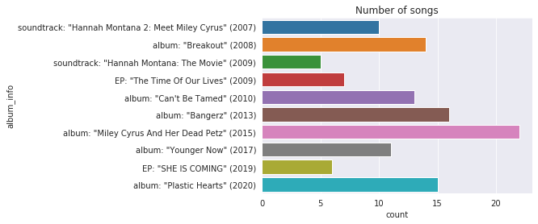
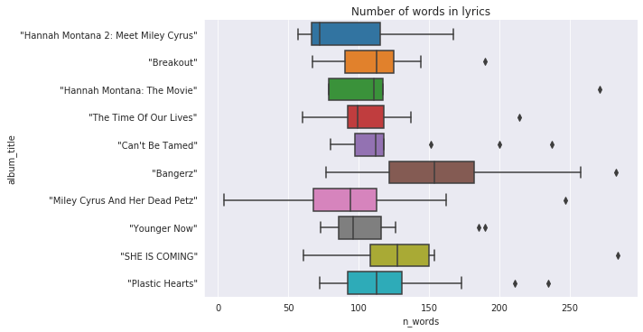
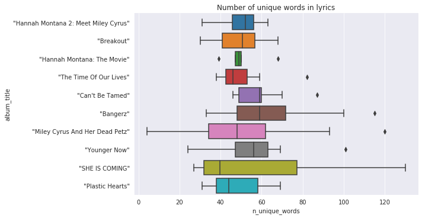
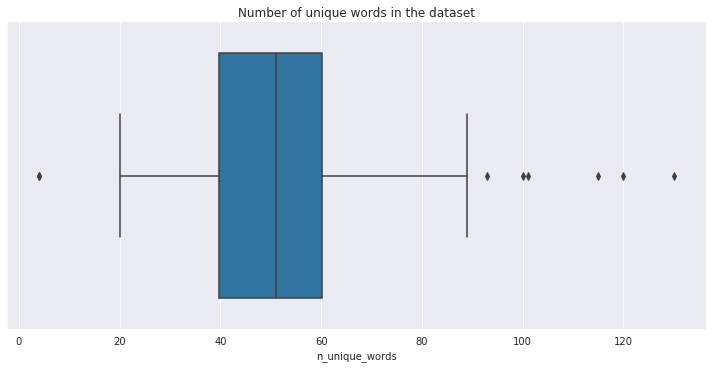
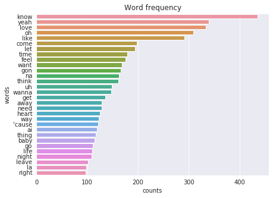
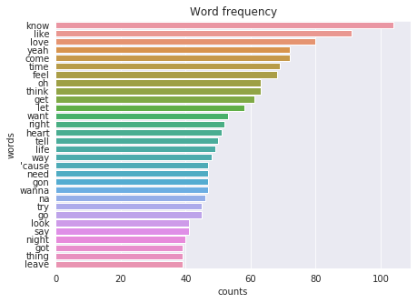

Have you ever thought about the lyrics of your favourite artist in terms of statistics? How many words and how many unique words the artist uses in his songs? What are the most common and most rarely used words? Is there correlation in these characteristics over the releases. Interesting to know, right? =) Let’s build some charts.
Data
As an example I am going to use lyrics of Miley Cirus scraped from the AZLyrics. How to scrape and parse the data I’ve described here.
The dataset consists of 160 songs and contains the title, lyrics, album title and the album information (if it has). The album information includes the type (e.g. soundtrack) and year of the release (for instance: 'EP: "The Time Of Our Lives" (2009)'), which should be splitted into separate columns.
Preprocessing
Since we have data, we can do a data science=) As it was already mentioned, the dataset contains a list of texts and in order to find answers to our questions we need to split it into words. This process is called tokenization, and words in this case are tokens.
In many NLP tasks I use the Spacy library. Spacy is a multitool for text processing, besides splitting the text into sentences and words, it builds a dependency tree (type of syntactic representation of the text) and provides part of speech (PoS) and dependency tagging. Even if Spacy may seem excessive for our case, it gives a simple API and can be necessary if you decide to make advanced analysis. Using Spacy we’ll tokenize the lyrics and make some basic preprocessing:
exclude stop words (pronouns, auxiliary, etc) and punctuation (is_stop and is_punct attributes of the Token object)
get lemmas - basic forms of the words (lemma attribute)
Counting
Having tokens, we can calculate their frequency in the entire dataset or in some group of the lyrics. We’ll use a built-in Counter, that forms a list of tuples (a word and how much it occurs in the input data) and allows us to get the most common words.
First let’s check how many songs are in each album and EP. 
So, there is a big difference in the number of songs: the EPs contain 6 and 7 songs, the albums contain from 11 to 22 songs. After the preprocessing of the initial list of tokens there are 2107 unique words in the dataset. Let’s see how the number of words vary from release to release. 
Did you know that a couple of words are enough for a song? =) Probably it’s a short intro. The longest poetries in “Bangerz”, the rest of the releases mostly have from 60 to 150 words. But there are some outliers, which contain up to 280 words. Let’s check unique words. 
It is interesting, the most wide vocabulary is used in one of the shortest EPs, and the longest release is quite average. In general, 50% of all songs are composed with about 40 - 60 unique words. A few songs consist of more than 100 different words. 
Most common and rare
Let’s find out what words are most often used in the songs and which of them are least popular. 
The top 30 words in Miley Cyrus songs includes know, love, wanna, need, heart, baby and others, which does not say too much, as probably that is a common situation for most popular music. Moreover, there are a couple of interjections (oh, la, na etc), which is also expected. We can find out which words are in most of the songs. 
The list of top words doesn’t change dramatically. About 110 songs include know, more than 80 lyrics contain love and like. Let’s look at words that appear only once. There are 867 such ones. A few examples: adorable, finish, pollution, bag, intertwine, dusk, arrow, hoppin, stray, last. If the top-30 of the most popular words consist of only monosyllabic words, the list of infrequent words includes words that have 2 and 3 syllabics.
At this point we pause our research. We explored some basic statistics and found out the most popular and rare words. You can continue exploratory analysis, using Spacy features, compare with other artists and so on.
The code is available on GitHub. Feel free to open pull requests.